44. 加速原理与商业周期的本质#
44.1. 概述#
本讲座研究 Gregory Chow 的两篇经典论文：
Chow [1968] 提出了加速原理的经验证据，描述了加速如何促进振荡，并分析了受随机冲击影响的线性差分方程中谱峰出现的条件
Chow and Levitan [1969] 提出了对一个校准的美国宏观计量经济模型的谱分析，并讲授了谱增益、相干性和领先-滞后模式
这些论文与以下讲座中的思想相关：
萨缪尔森乘数-加速器模型 中的乘数-加速数机制
线性状态空间模型 中的线性随机差分方程和自协方差
向量自回归和动态模态分解 中的多元动态特征模态
循环矩阵 中的傅里叶思想（以及关于经验估计的进阶讲座 Estimation of Spectra）
Chow [1968] 建立在早期在美国投资数据上检验加速原理的经验工作之上。
在建立理论框架之前，我们先从这些经验证据开始。
我们将不断回到三个思想：
在确定性模型中，振荡表明转移矩阵存在复特征值。
在随机模型中，”周期”表现为（单变量）谱密度中的局部峰值。
谱峰依赖于特征值，但也依赖于冲击如何进入系统以及可观测量如何加载于特征模态。
让我们从一些标准导入开始：
import numpy as np
import matplotlib.pyplot as plt
import matplotlib as mpl # i18n
FONTPATH = "fonts/SourceHanSerifSC-SemiBold.otf" # i18n
mpl.font_manager.fontManager.addfont(FONTPATH) # i18n
mpl.rcParams['font.family'] = ['Source Han Serif SC'] # i18n
我们将在整个讲座中使用以下辅助函数
def spectral_density_var1(A, V, ω_grid):
"""VAR(1) 的谱密度矩阵：y_t = A y_{t-1} + u_t。"""
A, V = np.asarray(A), np.asarray(V)
n = A.shape[0]
I = np.eye(n)
F = np.empty((len(ω_grid), n, n), dtype=complex)
for k, ω in enumerate(ω_grid):
H = np.linalg.inv(I - np.exp(-1j * ω) * A)
F[k] = (H @ V @ H.conj().T) / (2 * np.pi)
return F
def spectrum_of_linear_combination(F, b):
"""给定谱矩阵 F(ω)，计算 x_t = b'y_t 的谱。"""
b = np.asarray(b).reshape(-1, 1)
return np.array([np.real((b.T @ F[k] @ b).item())
for k in range(F.shape[0])])
def simulate_var1(A, V, T, burn=200, seed=1234):
r"""模拟 y_t = A y_{t-1} + u_t，其中 u_t \sim N(0, V)。"""
rng = np.random.default_rng(seed)
A, V = np.asarray(A), np.asarray(V)
n = A.shape[0]
chol = np.linalg.cholesky(V)
y = np.zeros((T + burn, n))
for t in range(1, T + burn):
y[t] = A @ y[t - 1] + chol @ rng.standard_normal(n)
return y[burn:]
def sample_autocorrelation(x, max_lag):
"""从滞后 0 到 max_lag 计算一维数组的样本自相关。"""
x = np.asarray(x)
x = x - x.mean()
denom = np.dot(x, x)
acf = np.empty(max_lag + 1)
for k in range(max_lag + 1):
acf[k] = np.dot(x[:-k] if k else x, x[k:]) / denom
return acf
44.2. 加速原理的经验基础#
Chow [1968] 一开始回顾了来自早期宏观计量经济工作的加速原理的经验证据。
Chow 使用 1931–40 年和 1948–63 年的年度观测数据，在三个投资类别上检验了加速方程：
新建筑
生产者耐用设备的私人国内总投资加上企业库存变化
上述后两个变量分别考虑
在每种情况下，当回归同时包含 \(Y_t\) 和 \(Y_{t-1}\)（其中 \(Y\) 是国民生产总值减去净转移支付后的税收）时，\(Y_{t-1}\) 上的系数与 \(Y_t\) 上的系数符号相反，且绝对值略小。
等价地，当用 \(\Delta Y_t\) 和 \(Y_{t-1}\) 表示时，\(Y_{t-1}\) 上的系数是 \(\Delta Y_t\) 系数的一个很小的比例。
44.2.1. 一个例子：汽车需求#
Chow 用他早期关于汽车需求工作中的汽车净投资数据给出了一个清晰的说明。
使用 1922–41 年和 1948–57 年的年度数据，他通过最小二乘法估计：
其中：
\(Y_t\) 是人均实际可支配个人收入
\(p_t\) 是汽车的相对价格指数
\(y_t^n\) 是人均客车净投资
括号中为标准误
关键观察：\(Y_{t-1}\) 和 \(p_{t-1}\) 上的系数是 \(Y_t\) 和 \(p_t\) 系数的相反数。
这种模式正是加速原理所预测的。
44.2.2. 从存量调整到加速#
一旦我们接受资本的存量调整需求方程，对加速的经验支持就不足为奇了：
其中 \(s_{it}\) 是资本品 \(i\) 的存量。
加速方程 (44.1) 本质上是 (44.2) 的一阶差分。
净投资是存量的变化，\(y_{it}^n = \Delta s_{it}\)，对 (44.2) 作差分得到：
在水平形式中，\(Y_t\) 和 \(Y_{t-1}\) 上的系数分别为 \(a_i\) 和 \(-a_i(1-b_i)\)。
当 \(b_i\) 离 1 不太远时，它们符号相反且大小相近。
存量调整与加速之间的这种联系是 Chow 关于为什么加速对商业周期至关重要论证的核心。
44.3. 加速使振荡成为可能#
在建立了加速的经验证据之后，我们现在考察为什么它在理论上对产生振荡至关重要。
Chow [1968] 提出了一个基本问题：如果我们仅使用带有简单分布滞后的标准需求方程构建一个宏观模型，系统能否产生持续的振荡？
他证明了，在自然的符号约束下，答案是否定的。
耐用品的存量调整需求导致投资方程中 \(Y_{t-1}\) 上的系数为负。
这个负系数刻画了加速效应：投资不仅对收入水平作出反应，还对其变化率作出反应。
这个负系数也是使特征方程中出现复根成为可能的原因。
没有它，Chow 证明了只有正系数的需求系统具有实正根，因此没有振荡动态。
萨缪尔森乘数-加速器模型 讲座通过 Hansen-Samuelson 乘数-加速数模型详细探讨了这一机制。
这里我们简要说明这个效应。
取乘数-加速数运动定律：
并将其重写为 \((Y_t, Y_{t-1})\) 中的一阶系统。
def samuelson_transition(c, v):
return np.array([[c + v, -v], [1.0, 0.0]])
# 比较弱加速与强加速
# 弱：c=0.8, v=0.1 给出实根（判别式 > 0）
# 强：c=0.6, v=0.8 给出复根（判别式 < 0）
cases = [("弱加速", 0.8, 0.1),
("强加速", 0.6, 0.8)]
A_list = [samuelson_transition(c, v) for _, c, v in cases]
for (label, c, v), A in zip(cases, A_list):
eig = np.linalg.eigvals(A)
disc = (c + v)**2 - 4*v
print(
f"{label}: c={c}, v={v}, 判别式={disc:.2f}, 特征值={eig}")
弱加速: c=0.8, v=0.1, 判别式=0.41, 特征值=[0.77015621 0.12984379]
强加速: c=0.6, v=0.8, 判别式=-1.24, 特征值=[0.7+0.55677644j 0.7-0.55677644j]
在弱加速（\(v=0.1\)）下，判别式为正，根为实数。
在强加速（\(v=0.8\)）下，判别式为负，根是共轭复数，从而使振荡动态成为可能。
现在让我们看看这些不同的特征值结构如何影响对 \(Y\) 中一次性冲击的脉冲响应
T = 40
s0 = np.array([1.0, 0.0])
irfs = []
for A in A_list:
s = s0.copy()
path = np.empty(T + 1)
for t in range(T + 1):
path[t] = s[0]
s = A @ s
irfs.append(path)
fig, ax = plt.subplots(figsize=(10, 4))
ax.plot(range(T + 1), irfs[0], lw=2,
label="弱加速（实根）")
ax.plot(range(T + 1), irfs[1], lw=2,
label="强加速（复根）")
ax.axhline(0.0, lw=0.8, color='gray')
ax.set_xlabel("时间")
ax.set_ylabel(r"$Y_t$")
ax.legend(frameon=False)
plt.tight_layout()
plt.show()
findfont: Failed to find font weight normal, now using 600.
findfont: Failed to find font weight normal, now using 600.
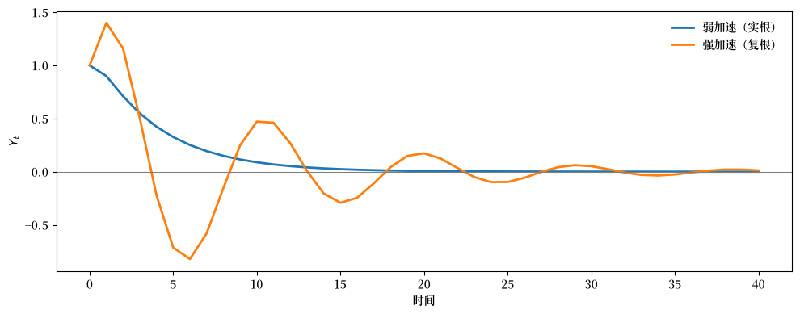
在弱加速下，脉冲响应单调衰减。
在强加速下，它振荡。
我们可以问，随着加速数 \(v\) 的增加，特征值如何变化。
随着我们增加加速数 \(v\)，特征值离原点越来越远。
对于这个模型，特征值的模是 \(|\lambda| = \sqrt{v}\)，所以稳定性边界是 \(v = 1\)。
v_grid = [0.2, 0.4, 0.6, 0.8, 0.95]
c = 0.6
T_irf = 40 # 脉冲响应的周期数
fig, axes = plt.subplots(1, 2, figsize=(12, 5))
for v in v_grid:
A = samuelson_transition(c, v)
eig = np.linalg.eigvals(A)
# 特征值（左图）
axes[0].scatter(eig.real, eig.imag, s=40, label=f'$v={v}$')
# 脉冲响应（右图）
s = np.array([1.0, 0.0])
irf = np.empty(T_irf + 1)
for t in range(T_irf + 1):
irf[t] = s[0]
s = A @ s
axes[1].plot(range(T_irf + 1), irf, lw=2, label=f'$v={v}$')
# 可视化特征值位置和单位圆
θ_circle = np.linspace(0, 2*np.pi, 100)
axes[0].plot(np.cos(θ_circle), np.sin(θ_circle),
'k--', lw=0.8, label='单位圆')
axes[0].set_xlabel('实部')
axes[0].set_ylabel('虚部')
axes[0].set_aspect('equal')
axes[0].legend(frameon=False)
# 脉冲响应面板
axes[1].axhline(0, lw=0.8, color='gray')
axes[1].set_xlabel('时间')
axes[1].set_ylabel(r'$Y_t$')
axes[1].legend(frameon=False)
plt.tight_layout()
plt.show()
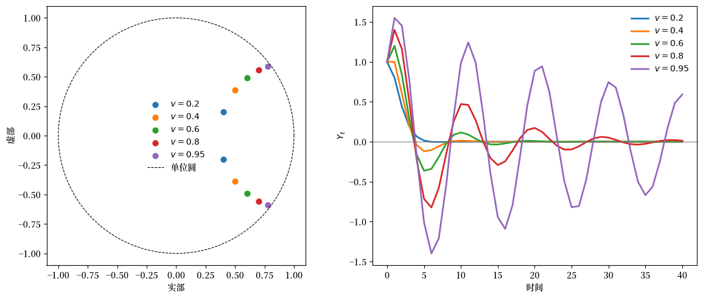
随着 \(v\) 增加，特征值接近单位圆，振荡变得更加持久。
这说明加速创造了复特征值，而复特征值是确定性系统中振荡动态所必需的。
但当我们加入随机冲击时会发生什么？
拉格纳·弗里希 [Frisch, 1933] 的一个洞见是，当系统被随机扰动持续扰动时，阻尼振荡可以被”维持”。
为了正式研究这一点，我们需要引入随机框架。
44.4. 带冲击的线性系统#
我们分析一个一阶线性随机系统
当 \(A\) 的特征值严格位于单位圆内时，该过程是协方差平稳的，其自协方差存在。
用 线性状态空间模型 的记号，这与保证离散李雅普诺夫方程有唯一解的稳定性条件相同。
定义滞后-\(k\) 自协方差矩阵
标准计算（也在 [Chow, 1968] 中推导）给出递归
第二个方程是 \(\Gamma_0\) 的离散李雅普诺夫方程。
Chow [1968] 用拉格纳·弗里希的一段话来引出随机分析：
我们讨论过的例子……表明，当一个[确定性的]经济系统产生振荡时，这些振荡最常见的是有阻尼的。 但在现实中，周期……通常不是有阻尼的。 如何解释摆动的维持？ ……我认为一种特别富有成效和有前途的方法是研究，如果一个确定性动态系统的解暴露于一系列不规则冲击之下，它会变成什么样…… 因此，通过将两个思想联系起来：(1) 确定性动态系统的连续解，以及 (2) 介入并提供可能维持摆动能量的间断冲击——我们得到了一个理论设定，它似乎为那些我们习惯于在统计时间数据中看到的运动提供了一个理性的解释。
– 拉格纳·弗里希 (1933) [Frisch, 1933]
Chow 的主要洞见是，确定性系统中的振荡对于在随机系统中产生”周期”既不必要也不充分。
我们必须把随机因素纳入考虑。
我们将证明，即使特征值是实数（没有确定性振荡），随机系统也能在其自协方差和谱密度中表现出周期性模式。
44.4.1. 用特征值表示的自协方差#
设 \(\lambda_1, \ldots, \lambda_p\) 是 \(A\) 的不同的、可能为复数的特征值，设 \(B\) 是以对应右特征向量为列的矩阵：
其中 \(D_\lambda = \text{diag}(\lambda_1, \ldots, \lambda_p)\)。
定义规范变量 \(z_t = B^{-1} y_t\)。
它们满足解耦动态：
其中 \(\varepsilon_t = B^{-1} u_t\) 具有协方差矩阵 \(W = B^{-1} V (B^{-1})^\top\)。
规范变量的自协方差矩阵，记为 \(\Gamma_k^*\)，满足
以及
其中 \(w_{ij}\) 是 \(W\) 的元素。
原始变量的自协方差矩阵为
标量自协方差 \(\gamma_{ij,k} = \mathbb{E}[y_{it} y_{j,t-k}]\) 是特征值幂的线性组合：
将此与来自初始条件 \(y_0\) 的确定性时间路径进行比较：
自协方差函数 (44.12) 和确定性路径 (44.13) 都是 \(\lambda_m^k\)（或 \(\lambda_j^t\)）的线性组合。
44.4.2. 复根与阻尼振荡#
当特征值以共轭复数对 \(\lambda = r e^{\pm i\theta}\)（\(r < 1\)）出现时，它们对自协方差函数的贡献是一个阻尼余弦：
其中适当的幅度 \(s\) 和相位 \(\phi\) 由特征向量载荷决定。
在确定性模型中，这种复根产生阻尼振荡时间路径。
在随机模型中，它们产生阻尼振荡自协方差函数。
正是在这个意义上，确定性振荡可以在随机模型中被”维持”,但正如我们将看到的，特征值与谱峰之间的联系比这暗示的更为微妙。
44.5. 从自协方差到谱#
Chow 的关键步骤是将自协方差序列 \(\{\Gamma_k\}\) 转换为一个频域对象。
谱密度矩阵是 \(\Gamma_k\) 的傅里叶变换：
对于 VAR(1) 系统 (44.4)，这个和有一个闭式
\(F(\omega)\) 告诉我们 \(y_t\) 中有多少变化与（角）频率 \(\omega\) 的周期相关联。
较高的频率对应于快速振荡，即每单位时间内序列完成许多上下运动的短周期。
较低的频率对应于较慢的振荡，即在延长的时间段内展开的长周期。
对应的周期长度（或周期）为
因此，频率 \(\omega = \pi\) 对应于 \(T = 2\) 个周期的最短可能周期，而接近零的频率对应于非常长的周期。
当谱密度 \(F(\omega)\) 集中在特定频率时，它表明时间序列在这些频率上表现出显著的周期性行为。
进阶讲座 Estimation of Spectra 解释了如何从数据估计 \(F(\omega)\)。
这里我们关注模型隐含的谱。
我们前面看到加速创造了复特征值，这使得振荡脉冲响应成为可能。
但复根能保证谱峰吗？
它们对谱峰是必要的吗？
Chow 为 Hansen-Samuelson 模型提供了精确的答案。
44.6. Hansen-Samuelson 模型中的谱峰#
Chow [1968] 提供了 Hansen-Samuelson 乘数-加速数模型的详细谱分析，推导了谱峰出现的精确条件。
该分析揭示，在这个特定模型中，复根对峰值是必要的，但正如我们稍后将看到的，这在一般情况下并不成立。
44.6.1. 作为一阶系统的模型#
二阶 Hansen-Samuelson 方程可以写成一阶系统：
其中 \(y_{2t} = y_{1,t-1}\) 只是 \(y_{1t}\) 的滞后值。
这种结构隐含了自协方差之间的一个特殊关系：
使用自协方差递归，Chow 证明这导致条件
它以一种有用的方式约束了谱密度。
44.6.2. 谱密度公式#
从方程 (44.12) 和标量核 \(g_i(\omega) = (1 - \lambda_i^2)/(1 + \lambda_i^2 - 2\lambda_i \cos\omega)\)，\(y_{1t}\) 的谱密度为：
它可以写成组合形式：
一个关键观察：由于条件 (44.20)，分子不是 \(\cos\omega\) 的函数。
因此，要找到 \(f_{11}(\omega)\) 的最大值，我们只需找到分母的最小值。
44.6.3. 谱峰的条件#
分母关于 \(\omega\) 的一阶导数为：
对于 \(0 < \omega < \pi\)，我们有 \(\sin\omega > 0\)，所以导数为零当且仅当：
对于共轭复根 \(\lambda_1 = r e^{i\theta}\)、\(\lambda_2 = r e^{-i\theta}\)，代入 (44.24) 得到：
二阶导数确认当 \(\omega < \frac{3\pi}{4}\) 时这是一个最大值。
有效解的必要条件是：
我们可以将其解释为：
当 \(r \approx 1\) 时，因子 \((1+r^2)/2r \approx 1\)，所以 \(\omega \approx \theta\)
当 \(r\) 较小（例如 0.3 或 0.4）时，条件 (44.26) 只有在 \(\cos\theta \approx 0\) 时才能满足，这意味着 \(\theta \approx \pi/2\)（约 4 个周期的周期）
如果 \(\theta = 54^\circ\)（对应于 6.67 个周期的周期）且 \(r = 0.4\)，那么 \((1+r^2)/2r = 1.45\)，给出 \(\cos\omega = 1.45 \times 0.588 = 0.85\)，即 \(\omega = 31.5^\circ\)，对应于 11.4 个周期的周期，这比确定性周期长得多。
def peak_condition_factor(r):
"""计算 (1 + r^2) / (2r)"""
return (1 + r**2) / (2 * r)
θ_deg = 54
θ = np.deg2rad(θ_deg)
r_grid = np.linspace(0.3, 0.99, 100)
# 对每个 r，计算隐含的峰值频率
ω_peak = []
for r in r_grid:
factor = peak_condition_factor(r)
cos_ω = factor * np.cos(θ)
if -1 < cos_ω < 1:
ω_peak.append(np.arccos(cos_ω))
else:
ω_peak.append(np.nan)
ω_peak = np.array(ω_peak)
period_peak = 2 * np.pi / ω_peak
fig, axes = plt.subplots(1, 2, figsize=(12, 4))
axes[0].plot(r_grid, np.rad2deg(ω_peak), lw=2)
axes[0].axhline(θ_deg, ls='--', lw=1.0, color='gray',
label=rf'$\theta = {θ_deg}°$')
axes[0].set_xlabel('特征值模 $r$')
axes[0].set_ylabel(r'峰值频率 $\omega$（度）')
axes[0].legend(frameon=False)
axes[1].plot(r_grid, period_peak, lw=2)
axes[1].axhline(360/θ_deg, ls='--', lw=1.0, color='gray',
label=rf'确定性周期 = {360/θ_deg:.1f}')
axes[1].set_xlabel('特征值模 $r$')
axes[1].set_ylabel('峰值周期')
axes[1].legend(frameon=False)
plt.tight_layout()
plt.show()
r_example = 0.4
factor = peak_condition_factor(r_example)
cos_ω = factor * np.cos(θ)
ω_example = np.arccos(cos_ω)
print(f"Chow 的例子：r = {r_example}, θ = {θ_deg}°")
print(f" cos(ω) = {cos_ω:.3f}")
print(f" ω = {np.rad2deg(ω_example):.1f}°")
print(f" 峰值周期 = {360/np.rad2deg(ω_example):.1f}")
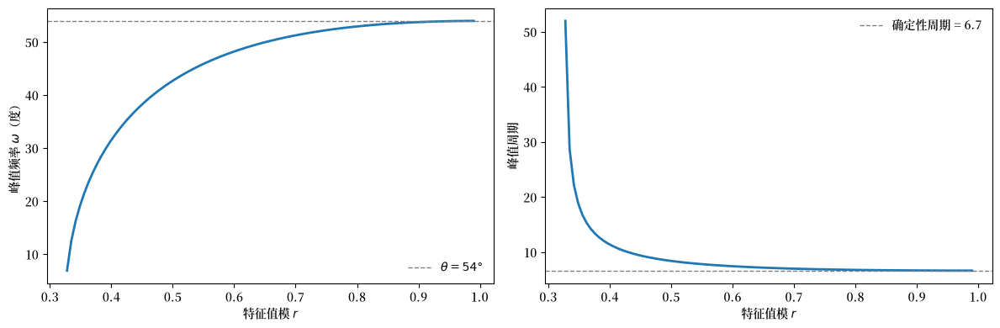
Chow 的例子：r = 0.4, θ = 54°
cos(ω) = 0.852
ω = 31.5°
峰值周期 = 11.4
当 \(r \to 1\) 时，峰值频率收敛到 \(\theta\)。
对于较小的 \(r\)，峰值频率可能与确定性振荡频率有很大不同。
44.6.4. 实正根无法产生峰值#
对于实正根 \(\lambda_1, \lambda_2 > 0\)，一阶条件 (44.24) 无法满足。
要理解为什么，回顾在内部频率 \(\omega \in (0, \pi)\) 处的谱峰需要
为使其有解，我们需要右边位于 \([-1, 1]\) 内。
但对于正的 \(\lambda_1, \lambda_2\)，分子超过 \(4\lambda_1\lambda_2\)：
右边是两个非负项之和（每一项都是一个正数乘以一个平方）。
它只有在 \(\lambda_1 = 1\) 和 \(\lambda_2 = 1\) 同时成立时才等于零，这违反了稳定性条件 \(|\lambda_i| < 1\)。
对于任何具有实正根的稳定系统，这个表达式严格为正，所以
这是不可能的。
这是一个关键结果：在 Hansen-Samuelson 模型中，复根对于内部频率处的谱峰是必要的。
下图说明了具有复根的情况与具有实根的情况之间谱的差异
ω_grid = np.linspace(1e-3, np.pi - 1e-3, 800)
V_hs = np.array([[1.0, 0.0], [0.0, 0.0]]) # 仅第一个方程中有冲击
# 情况 1：复根 (c=0.6, v=0.8)
c_complex, v_complex = 0.6, 0.8
A_complex = samuelson_transition(c_complex, v_complex)
eig_complex = np.linalg.eigvals(A_complex)
# 情况 2：实根 (c=0.8, v=0.1)
c_real, v_real = 0.8, 0.1
A_real = samuelson_transition(c_real, v_real)
eig_real = np.linalg.eigvals(A_real)
print(
f"复根情况 (c={c_complex}, v={v_complex})：特征值 = {eig_complex}")
print(
f"实根情况 (c={c_real}, v={v_real})：特征值 = {eig_real}")
F_complex = spectral_density_var1(A_complex, V_hs, ω_grid)
F_real = spectral_density_var1(A_real, V_hs, ω_grid)
f11_complex = np.real(F_complex[:, 0, 0])
f11_real = np.real(F_real[:, 0, 0])
fig, ax = plt.subplots()
ax.plot(ω_grid / np.pi, f11_complex / np.max(f11_complex), lw=2,
label=fr'复根 ($c={c_complex}, v={v_complex}$)')
ax.plot(ω_grid / np.pi, f11_real / np.max(f11_real), lw=2,
label=fr'实根 ($c={c_real}, v={v_real}$)')
ax.set_xlabel(r'频率 $\omega/\pi$')
ax.set_ylabel('归一化谱')
ax.legend(frameon=False)
plt.show()
复根情况 (c=0.6, v=0.8)：特征值 = [0.7+0.55677644j 0.7-0.55677644j]
实根情况 (c=0.8, v=0.1)：特征值 = [0.77015621 0.12984379]
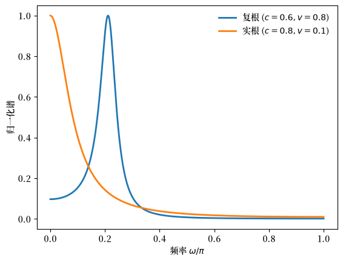
对于复根，谱有一个清晰的内部峰值。
对于实根，谱单调递减，不可能有内部峰值。
44.7. 实根可以在一般模型中产生峰值#
虽然实正根不能在 Hansen-Samuelson 模型中产生谱峰，Chow [1968] 强调这在一般情况下并不成立。
在多元系统中，即使所有特征值都是实数且为正，变量线性组合的谱密度也可以有内部峰值。
44.7.1. 例子#
Chow 构造了以下具有两个实正特征值的明确例子：
线性组合 \(x_t = b_m^\top y_t\) 的谱密度为：
Chow 列出了这些值：
\(\omega\) |
\(0\) |
\(\pi/8\) |
\(2\pi/8\) |
\(3\pi/8\) |
\(4\pi/8\) |
\(5\pi/8\) |
\(6\pi/8\) |
\(7\pi/8\) |
\(\pi\) |
|---|---|---|---|---|---|---|---|---|---|
\(f_{mm}(\omega)\) |
1.067 |
1.183 |
1.191 |
1.138 |
1.061 |
0.981 |
0.912 |
0.860 |
0.829 |
在略低于 \(\pi/8\) 的 \(\omega\) 处（对应约 11 个周期的周期）的峰值”相当明显”。
在下图中，我们重现这个表，但用 Python，我们可以绘制更精细的网格以更准确地找到峰值
λ1, λ2 = 0.1, 0.9
w11, w22, w12 = 1.0, 1.0, 0.8
bm1, bm2 = 1.0, -0.01
# 构造系统
A_chow_ex = np.diag([λ1, λ2])
# W 是规范冲击协方差；我们需要 V = B W B^T
# 对于具有不同特征值的对角 A，B = I，所以 V = W
V_chow_ex = np.array([[w11, w12], [w12, w22]])
b_chow_ex = np.array([bm1, bm2])
# Chow 的公式
def chow_spectrum_formula(ω):
term1 = 0.9913 / (1.01 - 0.2 * np.cos(ω))
term2 = 0.001570 / (1.81 - 1.8 * np.cos(ω))
return term1 - term2
# 通过公式和通过我们的一般方法计算
ω_table = np.array([0, np.pi/8, 2*np.pi/8, 3*np.pi/8, 4*np.pi/8,
5*np.pi/8, 6*np.pi/8, 7*np.pi/8, np.pi])
f_formula = np.array([chow_spectrum_formula(ω) for ω in ω_table])
# 一般方法
ω_grid_fine = np.linspace(1e-4, np.pi, 1000)
F_chow_ex = spectral_density_var1(A_chow_ex, V_chow_ex, ω_grid_fine)
f_general = spectrum_of_linear_combination(F_chow_ex, b_chow_ex)
# 归一化以匹配 Chow 表的尺度
scale = f_formula[0] / spectrum_of_linear_combination(
spectral_density_var1(
A_chow_ex, V_chow_ex, np.array([0.0])), b_chow_ex)[0]
print("Chow 的表（方程 67）：")
print("ω/π: ", " ".join([f"{ω/np.pi:.3f}" for ω in ω_table]))
print("f_mm(ω): ", " ".join([f"{f:.3f}" for f in f_formula]))
fig, ax = plt.subplots(figsize=(9, 4))
ax.plot(ω_grid_fine / np.pi, f_general * scale, lw=2,
label='谱')
ax.scatter(ω_table / np.pi, f_formula, s=50, zorder=3,
label="Chow 的表值")
# 标记峰值
i_peak = np.argmax(f_general)
ω_peak = ω_grid_fine[i_peak]
ax.axvline(ω_peak / np.pi, ls='--', lw=1.0, color='gray', alpha=0.7)
ax.set_xlabel(r'频率 $\omega/\pi$')
ax.set_ylabel(r'$f_{mm}(\omega)$')
ax.legend(frameon=False)
plt.show()
print(f"\n峰值在 ω/π ≈ {ω_peak/np.pi:.3f}，周期 ≈ {2*np.pi/ω_peak:.1f}")
Chow 的表（方程 67）：
ω/π: 0.000 0.125 0.250 0.375 0.500 0.625 0.750 0.875 1.000
f_mm(ω): 1.067 1.191 1.138 1.061 0.981 0.912 0.860 0.829 0.819
峰值在 ω/π ≈ 0.100，周期 ≈ 20.0
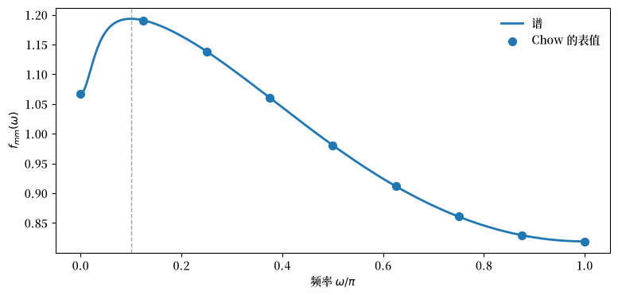
峰值出现在 \(\omega/\pi \approx 0.10\) 处，对应约 20 个周期的周期长度，同样比特征值隐含的确定性周期长得多。
44.7.2. 斯卢茨基联系#
Chow 将这个结果与斯卢茨基 [Slutzky, 1937] 的发现联系起来，即随机序列的移动平均具有反复出现的周期。
VAR(1) 模型可以写成无限移动平均：
这相当于用”几何递减”的权重 \(A^0, A^1, A^2, \ldots\) 对随机向量 \(u_t\) 取无限移动平均。
对于具有 \(0 < \lambda < 1\) 的标量过程，不会出现明显的周期。
但对于具有 0 到 1 之间实根的矩阵 \(A\)，周期可以在变量的线性组合中出现。
正如 Chow 所说：“当两个（规范）变量都没有明显的周期时……一个线性组合可以在其谱密度中有一个峰值。”
44.7.3. 一般教训#
上面的例子说明了以下核心要点：
在特定的 Hansen-Samuelson 模型中，复根对谱峰是必要的
但在一般多元系统中，复根既不必要也不充分
完整的谱形状依赖于：
\(A\) 的特征值
冲击协方差结构 \(V\)
感兴趣的可观测量如何加载于特征模态（向量 \(b\)）
44.8. 频域中的一个校准模型#
Chow and Levitan [1969] 使用来自 Chow [1968] 的频域对象来研究一个校准的年度宏观计量经济模型。
他们使用五个年度总量：
\(y_1 = C\)（消费），
\(y_2 = I_1\)（设备加库存），
\(y_3 = I_2\)（建筑），
\(y_4 = R_a\)（长期利率），
\(y_5 = Y_1 = C + I_1 + I_2\)（私人国内 GNP），
并加入 \(y_6 = y_{1,t-1}\) 以将原始系统重写为一阶形式。
在整个这一节中，频率以每年周期数衡量，\(f = \omega/2\pi \in [0, 1/2]\)。
遵循论文，我们将每个谱归一化，使其在 \([0, 1/2]\) 上的面积为 1，以便图比较形状而非尺度。
我们的目标是重构转移矩阵 \(A\)，然后计算并解释模型隐含的谱、增益/相干性和相位差。
44.8.1. 周期子系统#
论文从带有外生输入的简化形式开始，
为了研究周期，他们移除归因于 \(x_t\) 的确定性成分，并专注于零均值子系统
对于二阶矩，唯一额外的组成部分是协方差矩阵 \(V = \mathbb E[u_t u_t^\top]\)。
Chow 和 Levitan 通过以下方式从结构参数计算它
其中 \(\Sigma\) 是结构残差的协方差，\(M\) 是同期结构系数矩阵。
这里我们将 \(A\) 和 \(V\) 视为给定，并询问它们对谱和交叉谱意味着什么。
Chow 和 Levitan 报告的 \(6 \times 6\) 简化形式冲击协方差矩阵 \(V\)（按 \(10^{-7}\) 缩放）为：
第六行和列为零，因为 \(y_6\) 是一个恒等式（滞后的 \(y_1\)）。
转移矩阵 \(A\) 有六个特征根：
两个根接近于 1，因为两个结构方程是一阶差分的。
一个根（\(\lambda_6\)）在理论上为零，因为恒等式 \(y_5 = y_1 + y_2 + y_3\)。
共轭复数对 \(\lambda_{4,5}\) 的模为 \(|\lambda_4| = \sqrt{0.0761^2 + 0.1125^2} \approx 0.136\)。
右特征向量矩阵 \(B\)（列是对应于 \(\lambda_1, \ldots, \lambda_6\) 的特征向量）：
\(V\)、\(\{\lambda_i\}\) 和 \(B\) 一起足以计算所有谱和交叉谱密度。
44.8.2. 重构 \(A\) 并计算 \(F(\omega)\)#
论文报告了 \((\lambda, B, V)\)，这足以重构 \(A = B \, \mathrm{diag}(\lambda_1,\dots,\lambda_6)\, B^{-1}\)，然后计算模型隐含的谱对象。
λ = np.array([
0.9999725, 0.9999064, 0.4838,
0.0761 + 0.1125j, 0.0761 - 0.1125j, -0.00004142
], dtype=complex)
B = np.array([
[-0.008, 1.143, 0.320, 0.283+0.581j, 0.283-0.581j, 0.000],
[-0.000, 0.013, -0.586, -2.151+0.742j, -2.151-0.742j, 2.241],
[-0.001, 0.078, 0.889, -0.215+0.135j, -0.215-0.135j, 0.270],
[1.024, 0.271, 0.069, -0.231+0.163j, -0.231-0.163j, 0.307],
[-0.009, 1.235, 0.623, -2.082+1.468j, -2.082-1.468j, 2.766],
[-0.008, 1.143, 0.662, 4.772+0.714j, 4.772-0.714j, -4.399]
], dtype=complex)
V = np.array([
[8.250, 7.290, 2.137, 2.277, 17.68, 0],
[7.290, 7.135, 1.992, 2.165, 16.42, 0],
[2.137, 1.992, 0.618, 0.451, 4.746, 0],
[2.277, 2.165, 0.451, 1.511, 4.895, 0],
[17.68, 16.42, 4.746, 4.895, 38.84, 0],
[0, 0, 0, 0, 0, 0]
]) * 1e-7
D_λ = np.diag(λ)
A_chow = B @ D_λ @ np.linalg.inv(B)
A_chow = np.real(A_chow)
print("重构 A 的特征值：")
print(np.linalg.eigvals(A_chow).round(6))
重构 A 的特征值：
[-4.10000e-05+0.j 7.61000e-02+0.1125j 7.61000e-02-0.1125j
4.83800e-01+0.j 9.99906e-01+0.j 9.99973e-01+0.j ]
44.8.3. 规范坐标#
Chow 和 Levitan 的规范变换使用 \(z_t = B^{-1} y_t\)，给出动态 \(z_t = D_\lambda z_{t-1} + e_t\)。
相应地，规范冲击协方差为
B_inv = np.linalg.inv(B)
W = B_inv @ V @ B_inv.T
print("W 的对角线：")
print(np.diag(W).round(10))
W 的对角线：
[ 8.560e-08-0.00e+00j 3.638e-07-0.00e+00j 1.300e-08-0.00e+00j
-7.880e-08+6.26e-08j -7.880e-08-6.26e-08j -1.650e-08-0.00e+00j]
Chow 和 Levitan 推导了以下谱密度矩阵的闭式公式：
其中 \(w_{ij}\) 是规范冲击协方差 \(W\) 的元素。
def spectral_density_chow(λ, B, W, ω_grid):
"""通过 Chow 的特征分解公式计算谱密度。"""
p = len(λ)
F = np.zeros((len(ω_grid), p, p), dtype=complex)
for k, ω in enumerate(ω_grid):
F_star = np.zeros((p, p), dtype=complex)
for i in range(p):
for j in range(p):
denom = (1 - λ[i] * np.exp(-1j * ω)) \
* (1 - λ[j] * np.exp(1j * ω))
F_star[i, j] = W[i, j] / denom
F[k] = B @ F_star @ B.T
return F / (2 * np.pi)
freq = np.linspace(1e-4, 0.5, 5000) # [0, 1/2] 内每年周期数
ω_grid = 2 * np.pi * freq # [0, π] 内弧度
F_chow = spectral_density_chow(λ, B, W, ω_grid)
让我们绘制消费（\(y_1\)）和设备加库存（\(y_2\)）的单变量谱
variable_names = ['$C$', '$I_1$', '$I_2$', '$R_a$', '$Y_1$']
freq_ticks = [1/18, 1/9, 1/6, 1/4, 1/3, 1/2]
freq_labels = [r'$\frac{1}{18}$', r'$\frac{1}{9}$', r'$\frac{1}{6}$',
r'$\frac{1}{4}$', r'$\frac{1}{3}$', r'$\frac{1}{2}$']
def paper_frequency_axis(ax):
ax.set_xlim([0.0, 0.5])
ax.set_xticks(freq_ticks)
ax.set_xticklabels(freq_labels)
ax.set_xlabel(r'频率 $\omega/2\pi$')
# 归一化谱（面积设为 1）
S = np.real(np.diagonal(F_chow, axis1=1, axis2=2))[:, :5]
df = np.diff(freq)
areas = np.sum(0.5 * (S[1:] + S[:-1]) * df[:, None], axis=0)
S_norm = S / areas
mask = freq >= 0.0
fig, axes = plt.subplots(1, 2, figsize=(10, 6))
# 图 I.1：消费（对数刻度）
axes[0].plot(freq[mask], S_norm[mask, 0], lw=2)
axes[0].set_yscale('log')
paper_frequency_axis(axes[0])
axes[0].set_ylabel(r'归一化 $f_{11}(\omega)$')
# 图 I.2：设备 + 库存（对数刻度）
axes[1].plot(freq[mask], S_norm[mask, 1], lw=2)
axes[1].set_yscale('log')
paper_frequency_axis(axes[1])
axes[1].set_ylabel(r'归一化 $f_{22}(\omega)$')
plt.tight_layout()
plt.show()
i_peak = np.argmax(S_norm[mask, 1])
f_peak = freq[mask][i_peak]
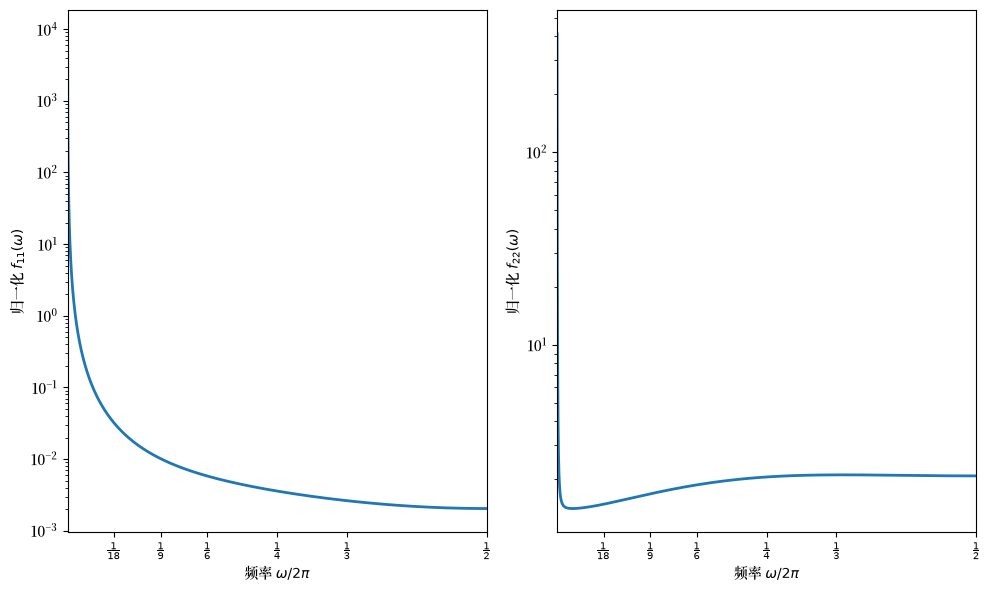
左图对应于消费，随频率单调递减。
它说明了 Granger 关于宏观经济时间序列的”典型谱形状”。
右图对应于设备加库存，显示出最清晰（但仍然非常平坦）的内部频率隆起。
Chow 和 Levitan 将两个图中极低频率的主导地位与强持续性和长期运动联系起来。
极大的低频功率可能源于极接近于 1 的特征值，这在某些方程以一阶差分形式写出时机械地出现。
局部峰值不是自动出现的：复根可能具有小的模，而多元相互作用即使在所有根都为实数时也能产生峰值。
右图中的内部隆起对应于大约三年的周期，谱在大约两到四年的周期上几乎平坦。
（此讨论遵循 [Chow and Levitan, 1969] 的第 II 节。）
44.8.4. 变量如何跨频率一起运动#
除了单变量谱，我们还可以问变量对如何在每个频率上协变。
交叉谱 \(f_{ij}(\omega) = c_{ij}(\omega) - i \cdot q_{ij}(\omega)\) 分解为共谱 \(c_{ij}\) 和正交谱 \(q_{ij}\)。
交叉幅度为 \(g_{ij}(\omega) = |f_{ij}(\omega)| = \sqrt{c_{ij}^2 + q_{ij}^2}\)。
平方相干性衡量频率 \(\omega\) 处的线性关联：
相干性衡量 \(y_i\) 在频率 \(\omega\) 处的方差有多少可以由同频率的 \(y_j\) “解释”。
高相干性意味着两个序列在该频率上紧密地一起运动。
增益是将 \(y_i\) 对 \(y_j\) 回归时的频率响应系数：
它衡量 \(y_i\) 对 \(y_j\) 在频率 \(\omega\) 处单位变化的反应程度。
例如，低频处增益 0.9 意味着 \(y_j\) 中的长周期运动几乎一对一地转化为 \(y_i\)，而高频处增益 0.3 意味着短周期运动被抑制。
相位捕捉领先-滞后关系（以弧度为单位）：
def cross_spectral_measures(F, i, j):
"""计算变量 i 和 j 之间的相干性、增益（y_i 对 y_j）和相位。"""
f_ij = F[:, i, j]
f_ii, f_jj = np.real(F[:, i, i]), np.real(F[:, j, j])
g_ij = np.abs(f_ij)
coherence = (g_ij**2) / (f_ii * f_jj)
gain = g_ij / f_jj
phase = np.arctan2(-np.imag(f_ij), np.real(f_ij))
return coherence, gain, phase
我们现在绘制增益和相干性，如 [Chow and Levitan, 1969] 的图 II.1–II.4。
gnp_idx = 4
fig, axes = plt.subplots(1, 2, figsize=(8, 6))
for idx, var_idx in enumerate([0, 1]):
coherence, gain, phase = cross_spectral_measures(F_chow, var_idx, gnp_idx)
ax = axes[idx]
ax.plot(freq[mask], coherence[mask],
lw=2, label=rf'$R^2_{{{var_idx+1}5}}(\omega)$')
ax.plot(freq[mask], gain[mask],
lw=2, label=rf'$G_{{{var_idx+1}5}}(\omega)$')
paper_frequency_axis(ax)
ax.set_ylim([0, 1.0])
ax.set_ylabel('增益、相干性')
ax.legend(frameon=False, loc='best')
plt.tight_layout()
plt.show()
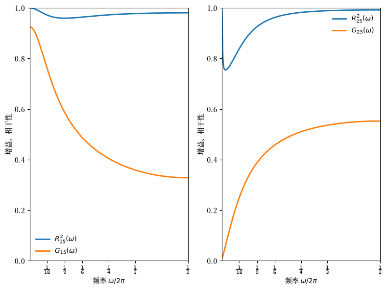
增益和相干性模式在各成分之间不同（[Chow and Levitan, 1969] 的图 II.1–II.2）：
消费与私人国内 GNP（左图）：
增益在极低频率处约为 0.9，但对于短于四年的周期降至 0.4 以下。
这证明短周期收入运动转化为消费的程度低于长周期运动，与永久收入解释一致。
相干性始终保持较高。
设备加库存与私人国内 GNP（右图）：
增益随频率上升，短周期时超过 0.5。
这是加速和波动的短期库存运动的频域特征。
fig, axes = plt.subplots(1, 2, figsize=(8, 6))
for idx, var_idx in enumerate([2, 3]):
coherence, gain, phase = cross_spectral_measures(F_chow, var_idx, gnp_idx)
ax = axes[idx]
ax.plot(freq[mask], coherence[mask],
lw=2, label=rf'$R^2_{{{var_idx+3}5}}(\omega)$')
ax.plot(freq[mask], gain[mask],
lw=2, label=rf'$G_{{{var_idx+3}5}}(\omega)$')
paper_frequency_axis(ax)
ax.set_ylim([0, 1.0])
ax.set_ylabel('增益、相干性')
ax.legend(frameon=False, loc='best')
plt.tight_layout()
plt.show()
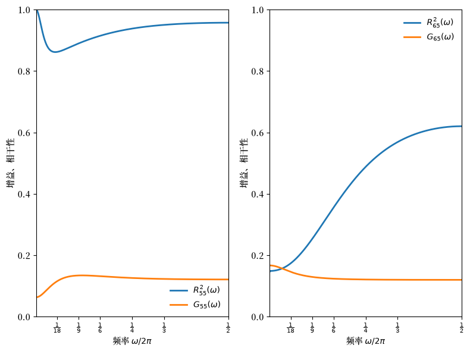
新建筑与私人国内 GNP（左图）：
增益在中等周期长度处达到峰值（短周期约为 0.1）。
两个投资序列的相干性在各频率上都保持相当高。
长期债券收益率与私人国内 GNP（右图）：
增益在各频率上的变化小于实际活动序列。
在商业周期频率上与产出的相干性相对较低，使得难以通过反转货币需求方程来解释利率运动。
44.8.5. 领先-滞后关系#
相位告诉我们哪个变量在每个频率上领先。
正相位意味着产出领先于该成分；负相位意味着该成分领先于产出。
fig, ax = plt.subplots()
labels = [r'$\psi_{15}(\omega)/2\pi$', r'$\psi_{25}(\omega)/2\pi$',
r'$\psi_{35}(\omega)/2\pi$', r'$\psi_{45}(\omega)/2\pi$']
for var_idx in range(4):
coherence, gain, phase = cross_spectral_measures(F_chow, var_idx, gnp_idx)
phase_cycles = phase / (2 * np.pi)
ax.plot(freq[mask], phase_cycles[mask], lw=2, label=labels[var_idx])
ax.axhline(0, lw=0.8)
paper_frequency_axis(ax)
ax.set_ylabel('以周期为单位的相位差')
ax.set_ylim([-0.25, 0.25])
ax.set_yticks(np.arange(-0.25, 0.3, 0.05), minor=True)
ax.legend(frameon=False)
plt.tight_layout()
plt.show()
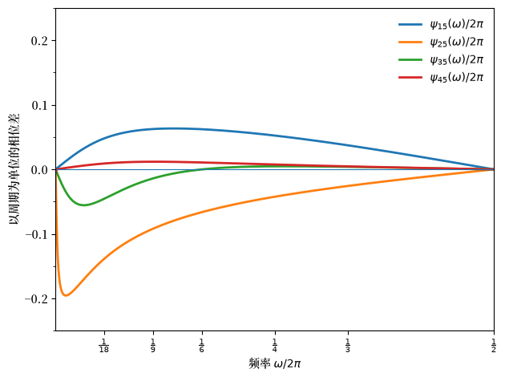
相位关系揭示了：
产出领先消费一小部分周期（6 年周期约 0.06 个周期，3 年周期约 0.04 个周期）。
设备加库存倾向于领先产出（6 年周期约 0.07 个周期，3 年周期约 0.03 个周期）。
新建筑在低频处领先，在高频处接近同步。
债券收益率略微滞后产出，在时间上保持接近同步。
这些隐含的领先和滞后大致与其他地方报告的转折点时机总结一致，同一模型的模拟在转折点处产生类似的领先-滞后排序（[Chow and Levitan, 1969] 的图 III）。
44.8.6. 谱形状的组成部分#
每个特征值通过标量核贡献一个特征谱形状
对于实数 \(\lambda_i\)，这简化为
每个可观测的谱密度是这些核的线性组合（加上交叉项）。
下面，我们绘制每个特征值的标量核，以了解它们如何塑造整体谱
def scalar_kernel(λ_i, ω_grid):
"""标量谱核 g_i(ω)。"""
λ_i = complex(λ_i)
mod_sq = np.abs(λ_i)**2
return np.array(
[(1 - mod_sq) / np.abs(1 - λ_i * np.exp(-1j * ω))**2
for ω in ω_grid])
fig, ax = plt.subplots(figsize=(10, 5))
for i, λ_i in enumerate(λ):
if np.abs(λ_i) > 0.01:
g_i = scalar_kernel(λ_i, ω_grid)
label = f'$\\lambda_{i+1}$ = {λ_i:.4f}' \
if np.isreal(λ_i) else f'$\\lambda_{i+1}$ = {λ_i:.3f}'
ax.semilogy(freq, g_i, label=label, lw=2)
ax.set_xlabel(r'频率 $\omega/2\pi$')
ax.set_ylabel('$g_i(\\omega)$')
ax.set_xlim([1/18, 0.5])
ax.set_xticks(freq_ticks)
ax.set_xticklabels(freq_labels)
ax.legend(frameon=False)
plt.show()
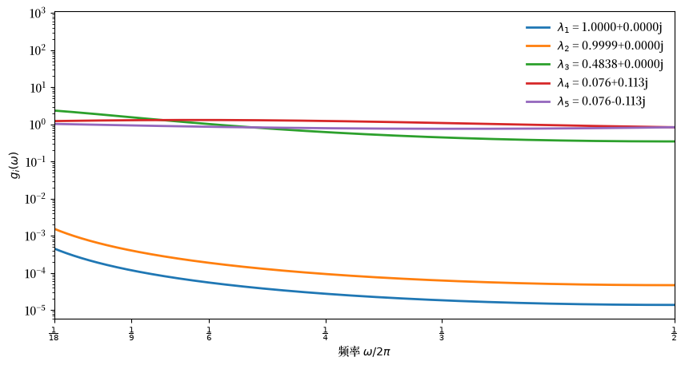
该图揭示了特征值大小如何塑造谱贡献：
接近于 1 的特征值（\(\lambda_1, \lambda_2 \approx 1\)）产生在低频处急剧达到峰值的核，因为这些驱动了上面谱中看到的强低频功率。
中等特征值（\(\lambda_3 \approx 0.48\)）贡献一个更平坦的成分，将功率更均匀地分布在各频率上。
复数对（\(\lambda_{4,5}\)）的模太小（\(|\lambda_{4,5}| \approx 0.136\)），以至于其核几乎平坦，太弱而无法产生明显的内部峰值。
这个分解解释了为什么谱看起来是这样的：接近于 1 的特征值占主导地位，将方差集中在极低频率处。
复数对尽管在原则上使振荡动态成为可能，但模不足，无法产生可见的谱峰。
44.9. 总结#
Chow [1968] 得出了几个对理解商业周期仍然相关的结论。
加速原理得到了强有力的经验支持：投资方程中滞后产出的负系数是跨数据集的稳健发现。
特征值与谱峰之间的关系比乍看起来更为微妙：
复根保证振荡的自协方差，但它们对明显的谱峰既不必要也不充分。
特别是在 Hansen–Samuelson 模型中，复根确实对峰值是必要的。
但在一般多元系统中，即使是实根也可以通过冲击和特征向量载荷的相互作用产生峰值。
Chow and Levitan [1969] 演示了这些对象在一个校准系统中的样子：来自接近于 1 的特征值的强低频功率、频率相关的增益和相干性，以及随周期长度变化的领先-滞后关系。
他们的结果与 Granger 关于经济时间序列的”典型谱形状”一致。
即一个随频率单调递减的函数，由某些方程以一阶差分形式指定时出现的接近于 1 的特征值驱动。
理解这种形状是否反映了真实的数据生成过程，需要分析结构计量经济模型隐含的谱密度。
44.10. 练习#
练习 44.1
在 Hansen-Samuelson 模型中，为加速数 \(v\) 的几个值并排绘制脉冲响应和谱，展示加速强度如何影响时域和频域特征。
使用与正文相同的 \(v\) 值：\(v \in \{0.2, 0.4, 0.6, 0.8, 0.95\}\)，\(c = 0.6\)。
解答 练习 44.1
这是一个解法：
v_grid_ex1 = [0.2, 0.4, 0.6, 0.8, 0.95]
c_ex1 = 0.6
freq_ex1 = np.linspace(1e-4, 0.5, 2000)
ω_grid_ex1 = 2 * np.pi * freq_ex1
V_ex1 = np.array([[1.0, 0.0], [0.0, 0.0]])
T_irf_ex1 = 40
fig, axes = plt.subplots(1, 2, figsize=(12, 5))
for v in v_grid_ex1:
A = samuelson_transition(c_ex1, v)
# 脉冲响应（左图）
s = np.array([1.0, 0.0])
irf = np.empty(T_irf_ex1 + 1)
for t in range(T_irf_ex1 + 1):
irf[t] = s[0]
s = A @ s
axes[0].plot(range(T_irf_ex1 + 1), irf, lw=2, label=f'$v={v}$')
# 谱（右图）
F = spectral_density_var1(A, V_ex1, ω_grid_ex1)
f11 = np.real(F[:, 0, 0])
df = np.diff(freq_ex1)
area = np.sum(0.5 * (f11[1:] + f11[:-1]) * df)
f11_norm = f11 / area
axes[1].plot(freq_ex1, f11_norm, lw=2, label=f'$v={v}$')
axes[0].axhline(0, lw=0.8, color='gray')
axes[0].set_xlabel('时间')
axes[0].set_ylabel(r'$Y_t$')
axes[0].legend(frameon=False)
axes[1].set_xlabel(r'频率 $\omega/2\pi$')
axes[1].set_ylabel('归一化谱')
axes[1].set_xlim([0, 0.5])
axes[1].set_yscale('log')
axes[1].legend(frameon=False)
plt.tight_layout()
plt.show()
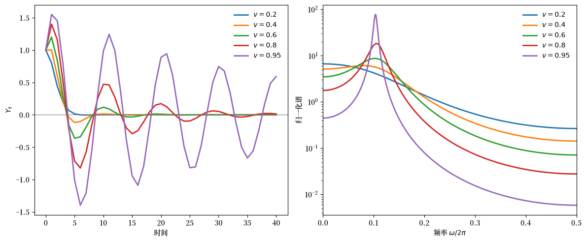
随着 \(v\) 增加，特征值接近单位圆：振荡在时域中变得更加持久（左），谱峰在频域中变得更尖锐（右）。
复根在内部频率处产生明显的峰值——这是商业周期的谱特征。
练习 44.2
对 Hansen-Samuelson 模型数值验证谱峰条件 (44.25)。
对于固定 \(\theta = 60°\) 的一系列特征值模 \(r \in [0.3, 0.99]\)，计算：
来自公式的理论峰值频率：\(\cos\omega = \frac{1+r^2}{2r}\cos\theta\)
通过数值最大化谱密度得到的实际峰值频率
在同一图上绘制两者并验证它们匹配。
确定没有有效峰值存在的 \(r\) 范围（当条件 (44.26) 被违反时）。
解答 练习 44.2
这是一个解法：
θ_ex = np.pi / 3 # 60 度
r_grid = np.linspace(0.3, 0.99, 50)
ω_grid_ex = np.linspace(1e-3, np.pi - 1e-3, 1000)
V_hs_ex = np.array([[1.0, 0.0], [0.0, 0.0]])
ω_theory = []
ω_numerical = []
for r in r_grid:
# 理论峰值
factor = (1 + r**2) / (2 * r)
cos_ω = factor * np.cos(θ_ex)
if -1 < cos_ω < 1:
ω_theory.append(np.arccos(cos_ω))
else:
ω_theory.append(np.nan)
# 来自谱密度的数值峰值
# 构造具有特征值 r*exp(+-iθ) 的 Hansen-Samuelson
# 这对应于 c + v = 2r*cos(θ), v = r^2
v = r**2
c = 2 * r * np.cos(θ_ex) - v
A_ex = samuelson_transition(c, v)
F_ex = spectral_density_var1(A_ex, V_hs_ex, ω_grid_ex)
f11 = np.real(F_ex[:, 0, 0])
i_max = np.argmax(f11)
# 只有当峰值不在边界时才算作峰值
if 5 < i_max < len(ω_grid_ex) - 5:
ω_numerical.append(ω_grid_ex[i_max])
else:
ω_numerical.append(np.nan)
ω_theory = np.array(ω_theory)
ω_numerical = np.array(ω_numerical)
fig, axes = plt.subplots(1, 2, figsize=(12, 4))
# 绘制峰值频率
axes[0].plot(r_grid, ω_theory / np.pi, lw=2, label="Chow 的公式")
axes[0].plot(r_grid, ω_numerical / np.pi, 'o', markersize=4, label='数值')
axes[0].axhline(θ_ex / np.pi, ls='--', lw=1.0, color='gray', label=r'$\theta/\pi$')
axes[0].set_xlabel('特征值模 $r$')
axes[0].set_ylabel(r'峰值频率 $\omega^*/\pi$')
axes[0].legend(frameon=False)
# 绘制因子 (1+r^2)/2r 以显示峰值何时有效
axes[1].plot(r_grid, (1 + r_grid**2) / (2 * r_grid), lw=2)
axes[1].axhline(1 / np.cos(θ_ex), ls='--', lw=1.0, color='red',
label=f'阈值 = 1/cos({np.rad2deg(θ_ex):.0f}°) = {1/np.cos(θ_ex):.2f}')
axes[1].set_xlabel('特征值模 $r$')
axes[1].set_ylabel(r'$(1+r^2)/2r$')
axes[1].legend(frameon=False)
plt.tight_layout()
plt.show()
# 找到没有峰值存在的阈值 r
valid_mask = ~np.isnan(ω_theory)
if valid_mask.any():
r_threshold = r_grid[valid_mask][0]
print(f"峰值存在于 r >= {r_threshold:.2f}")
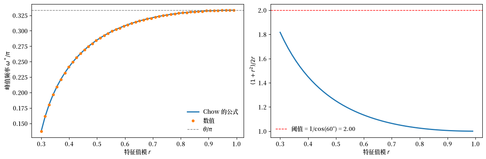
峰值存在于 r >= 0.30
理论和数值峰值频率紧密匹配。
当 \(r \to 1\) 时，峰值频率收敛到 \(\theta\)。
对于较小的 \(r\)，因子 \((1+r^2)/2r\) 超过阈值，不存在有效峰值。
练习 44.3
在”实根但有峰值”的例子中，保持 \(A\) 固定，并将冲击相关性（\(V\) 的非对角元）在 \(0\) 和 \(0.99\) 之间变化。
内部频率峰值何时出现，它的位置如何变化？
解答 练习 44.3
这是一个解法：
A_ex3 = np.diag([0.1, 0.9])
b_ex3 = np.array([1.0, -0.01])
corr_grid = np.linspace(0, 0.99, 50)
peak_periods = []
for corr in corr_grid:
V_ex3 = np.array([[1.0, corr], [corr, 1.0]])
F_ex3 = spectral_density_var1(A_ex3, V_ex3, ω_grid_ex)
f_x = spectrum_of_linear_combination(F_ex3, b_ex3)
i_max = np.argmax(f_x)
if 5 < i_max < len(ω_grid_ex) - 5:
peak_periods.append(2 * np.pi / ω_grid_ex[i_max])
else:
peak_periods.append(np.nan)
fig, ax = plt.subplots(figsize=(8, 4))
ax.plot(corr_grid, peak_periods, marker='o', lw=2, markersize=4)
ax.set_xlabel('冲击相关性')
ax.set_ylabel('峰值周期')
plt.show()
threshold_idx = np.where(~np.isnan(peak_periods))[0]
if len(threshold_idx) > 0:
print(
f"当相关性 >= {corr_grid[threshold_idx[0]]:.2f} 时出现内部峰值")
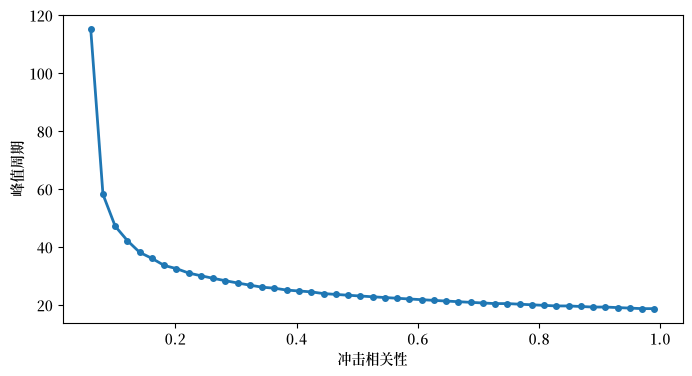
当相关性 >= 0.06 时出现内部峰值
内部峰值只有在冲击相关性超过某个阈值时才出现。
这说明谱峰依赖于完整的系统结构，而不仅仅是特征值。
练习 44.4
使用校准的 Chow-Levitan 参数，用以下方法计算自协方差矩阵 \(\Gamma_0, \Gamma_1, \ldots, \Gamma_{10}\)：
递归 \(\Gamma_k = A \Gamma_{k-1}\)，其中 \(\Gamma_0\) 来自李雅普诺夫方程。
Chow 的特征分解公式 \(\Gamma_k = B D_\lambda^k \Gamma_0^* B^\top\)，其中 \(\Gamma_0^*\) 是规范协方差。
验证两种方法给出相同的结果。
解答 练习 44.4
这是一个解法：
from scipy.linalg import solve_discrete_lyapunov
Γ_0_lyap = solve_discrete_lyapunov(A_chow, V)
Γ_recursion = [Γ_0_lyap]
for k in range(1, 11):
Γ_recursion.append(A_chow @ Γ_recursion[-1])
p = len(λ)
Γ_0_star = np.zeros((p, p), dtype=complex)
for i in range(p):
for j in range(p):
Γ_0_star[i, j] = W[i, j] / (1 - λ[i] * λ[j])
Γ_eigen = []
for k in range(11):
D_k = np.diag(λ**k)
Γ_eigen.append(np.real(B @ D_k @ Γ_0_star @ B.T))
print("Γ_5 的比较（前 3x3 块）：")
print("\n递归方法：")
print(np.real(Γ_recursion[5][:3, :3]).round(10))
print("\n特征分解方法：")
print(Γ_eigen[5][:3, :3].round(10))
print("\n最大绝对差：",
np.max(np.abs(np.real(Γ_recursion[5]) - Γ_eigen[5])))
Γ_5 的比较（前 3x3 块）：
递归方法：
[[2.5417901e-03 2.9310700e-05 1.7370210e-04]
[2.8886900e-05 3.3220000e-07 1.9737000e-06]
[1.7356020e-04 2.0028000e-06 1.1861700e-05]]
特征分解方法：
[[2.5417901e-03 2.9310700e-05 1.7370210e-04]
[2.8886900e-05 3.3220000e-07 1.9737000e-06]
[1.7356020e-04 2.0028000e-06 1.1861700e-05]]
最大绝对差： 6.77348802047284e-14
两种方法产生基本相同的结果，直到数值精度。
练习 44.5
通过将 \(\lambda_3\) 从 \(0.4838\) 改为 \(0.95\) 来修改 Chow-Levitan 模型。
重新计算谱密度。
这个变化如何影响每个变量的谱形状？
什么经济解释可能对应于这个参数变化？
解答 练习 44.5
这是一个解法：
# 修改 λ_3 并重构转移矩阵
λ_modified = λ.copy()
λ_modified[2] = 0.95
D_λ_mod = np.diag(λ_modified)
A_mod = np.real(B @ D_λ_mod @ np.linalg.inv(B))
# 使用原始 V 通过 VAR(1) 公式计算谱
F_mod = spectral_density_var1(A_mod, V, ω_grid)
F_orig = spectral_density_var1(A_chow, V, ω_grid)
# 绘制产出 (Y_1) 的谱比率
f_orig = np.real(F_orig[:, 4, 4])
f_mod = np.real(F_mod[:, 4, 4])
fig, ax = plt.subplots()
ax.plot(freq, f_mod / f_orig, lw=2)
ax.axhline(1.0, ls='--', lw=1, color='gray')
paper_frequency_axis(ax)
ax.set_ylabel(r"比率：$Y_1$ 的修改后 / 原始谱")
plt.show()
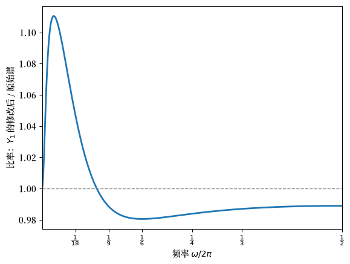
接近于 1 的特征值（\(\lambda_1, \lambda_2 \approx 0.9999\)）如此强烈地主导产出谱，以至于将 \(\lambda_3\) 从 0.48 改为 0.95 只产生较小的相对影响。
比率图揭示了这个变化：修改后的谱在低到中频处功率略多，在高频处略少。
从经济上讲，增加 \(\lambda_3\) 为它所支配的模态增加了持续性。